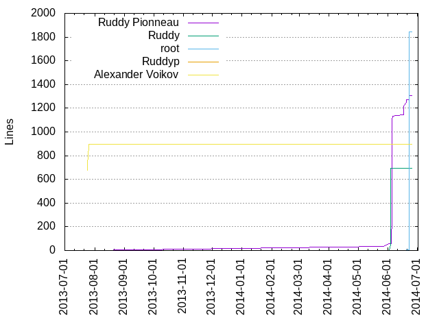
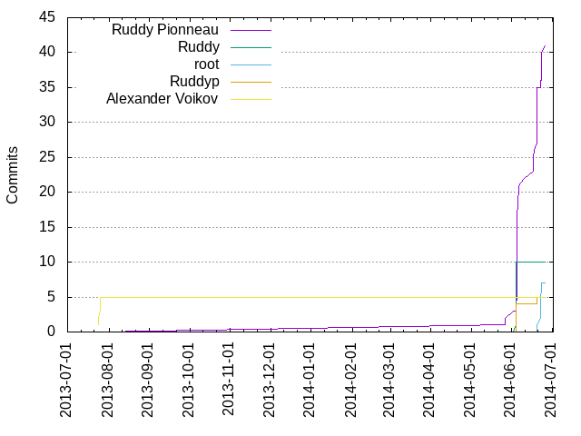

Authors
| Author | Commits (%) | + lines | - lines | First commit | Last commit | Age | Active days | # by commits |
|---|
| Ruddy Pionneau | 41 (60.29%) | 1309 | 1635 | 2014-05-27 | 2014-06-26 | 30 days, 1:00:46 | 11 | 1 |
| Ruddy | 10 (14.71%) | 695 | 16 | 2014-06-04 | 2014-06-04 | 3:37:16 | 1 | 2 |
| root | 7 (10.29%) | 1842 | 1226 | 2014-06-20 | 2014-06-23 | 3 days, 0:19:53 | 2 | 3 |
| Ruddyp | 5 (7.35%) | 0 | 639 | 2014-06-04 | 2014-06-20 | 16 days, 2:53:44 | 2 | 4 |
| Alexander Voikov | 5 (7.35%) | 897 | 24 | 2013-07-24 | 2013-07-26 | 1 day, 4:08:30 | 2 | 5 |


| Month | Author | Commits (%) | Next top 5 | Number of authors |
|---|
| 2014-06 | Ruddy Pionneau | 39 (63.93% of 61) | Ruddy, root, Ruddyp | 4 |
| 2014-05 | Ruddy Pionneau | 2 (100.00% of 2) | | 1 |
| 2013-07 | Alexander Voikov | 5 (100.00% of 5) | | 1 |
| Year | Author | Commits (%) | Next top 5 | Number of authors |
|---|
| 2014 | Ruddy Pionneau | 41 (65.08% of 63) | Ruddy, root, Ruddyp | 4 |
| 2013 | Alexander Voikov | 5 (100.00% of 5) | | 1 |
| Domains | Total (%) |
|---|
| orange.fr | 56 (82.35%) |
|---|
| debian | 7 (10.29%) |
|---|
| yandex.ru | 5 (7.35%) |
|---|